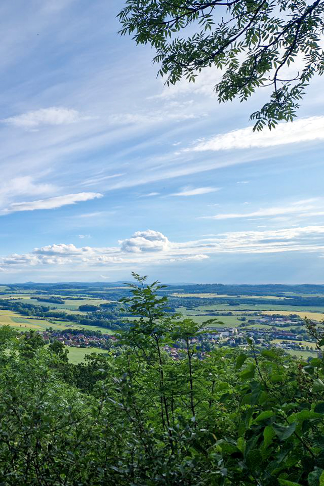

<!DOCTYPE html>
<html lang="de">
    <head>
        <meta charset="UTF-8">
        <meta name="viewport" content="width=device-width, initial-scale=1.0">
        <title>Soweit die Knie tragen</title>
    </head>
    <body>
        <div id="map"></div>
        
        <link rel="stylesheet" href="https://unpkg.com/leaflet@1.7.1/dist/leaflet.css"/>
        <link rel="stylesheet" href="https://unpkg.com/leaflet-geosearch/dist/geosearch.css" />

        <style>
            html, body {
                height: 100%;
                margin: 0;
                padding: 0;
            }
            #map {
                width: 100%;
                height: 100%;
            }
            .popup-content {
                text-align: center;
                max-width: 200px;
                font-family: Arial, sans-serif;
                padding: 10px;
                box-sizing: border-box; /* Ensures padding is included in width */
            }
            .popup-content video {
                width: 100%;
                border-radius: 10px;
                margin-bottom: 10px;
            }
            .popup-image {
                width: 100%;
                height: auto;
                border-radius: 10px; 
            }
            .popup-content h3 {
                font-weight: bold;
                margin: 10px 0;
                color: #333;
            }
            .popup-content .date {
                font-size: 0.9em;
                color: #777;
                margin-bottom: 10px;
            }
            .popup-content p {
                margin: 0 0 10px;
                line-height: 1.4;
                text-align: left;
            }
        </style>

        <script src="https://unpkg.com/leaflet@1.7.1/dist/leaflet.js"></script>
        <script src="https://unpkg.com/leaflet-geosearch/dist/bundle.min.js"></script>

        <script src="./data/routenroute_1.js"></script>

        <script>
            var mymap = L.map('map').setView([51.0897904,14.6926595], 10);

            var openStreetMapLayer = L.tileLayer('https://{s}.tile.openstreetmap.org/{z}/{x}/{y}.png', {
                attribution: "&copy; <a href='https://www.openstreetmap.org/copyright' target='_blank'>OpenStreetMap</a> contributors",
                maxZoom: 19
            }).addTo(mymap);

            var openTopoMapLayer = L.tileLayer('https://{s}.tile.opentopomap.org/{z}/{x}/{y}.png', {
                attribution: "&copy; <a href='https://www.openstreetmap.org/copyright' target='_blank'>OpenStreetMap</a> contributors, &copy; <a href='https://opentopomap.org' target='_blank'>OpenTopoMap</a> (CC-BY-SA)",
                maxZoom: 17
            });

            var googleSatLayer = L.tileLayer('https://{s}.google.com/vt/lyrs=s&x={x}&y={y}&z={z}', {
                maxZoom: 19,
                subdomains: ['mt0', 'mt1', 'mt2', 'mt3'],
                attribution: "&copy; <a href='https://www.google.com/maps' target='_blank'>Google Maps</a>"
            });

            var baseMaps = {
                "OpenStreetMap": openStreetMapLayer,
                "OpenTopoMap": openTopoMapLayer,
                "Luftbilder": googleSatLayer
            };

            var layer_routenroute_1 = new L.geoJson(json_routenroute_1, {
                attribution: '',
                interactive: false,
                dataVar: 'json_routenroute_1',
                layerName: 'layer_routenroute_1',
                style: getStyle(mymap.getZoom())
            });
            mymap.addLayer(layer_routenroute_1);

            function getStyle(zoom) {
                if (zoom >= 14) {
                    return {
                        opacity: 1,
                        color: 'rgba(190,45,45,1.0)', // Rote Farbe
                        dashArray: '5, 12', // Muster für größere Punkte: 0 Pixel Linie (Punkt), 20 Pixel Lücke
                        lineCap: 'round', // Enden der Linie sind rund, um Punkte zu erzeugen
                        lineJoin: 'round', // Ecken der Linie sind rund
                        weight: 5.0, // Breite der Linie, um die Größe der Punkte anzupassen
                        fillOpacity: 0,
                        interactive: true,
                    };
                } else {
                    return {
                        opacity: 1,
                        color: 'rgba(190,45,45,1.0)', // Rote Farbe
                        dashArray: '0, 0', // Muster für kleinere Punkte: 0 Pixel Linie (Punkt), 10 Pixel Lücke
                        lineCap: 'round', // Enden der Linie sind rund, um Punkte zu erzeugen
                        lineJoin: 'round', // Ecken der Linie sind rund
                        weight: 3.0, // Breite der Linie, um die Größe der Punkte anzupassen
                        fillOpacity: 0,
                        interactive: true,
                    };
                }
            }

            mymap.on('zoomend', function() {
                layer_routenroute_1.setStyle(getStyle(mymap.getZoom()));
            });

            var orangeIcon = L.icon({
                iconUrl: './data/marker-icon-orange.png',
                iconSize: [25, 41], // Größe des Icons
                iconAnchor: [13, 42], // Punkt, der dem Marker auf der Karte entspricht
                popupAnchor: [2, -35], // Punkt, von dem aus der Popup ausgeht
                shadowUrl: 'https://unpkg.com/leaflet@1.7.1/dist/images/marker-shadow.png', // Standard-Shadow von Leaflet
                shadowSize: [41, 41], // Größe des Schattens
                shadowAnchor: [13, 41] // Punkt, der dem Schatten auf der Karte entspricht
            });

            L.control.layers(baseMaps).addTo(mymap);

            L.control.scale({
                metric: true, 
                imperial: false 
            }).addTo(mymap);

            // Geosearch mit OpenStreetMap-Geocoder hinzufügen
            const search = new GeoSearch.GeoSearchControl({
                provider: new GeoSearch.OpenStreetMapProvider(),
                autoComplete: true, // Automatische Vervollständigung aktivieren
                autoCompleteDelay: 250, // Verzögerung in Millisekunden
                showMarker: true, // Zeigt einen Marker für das Suchergebnis an
                showPopup: false, // Deaktiviert das Popup für den Marker
            });

            mymap.addControl(search);

            // Foto Fullscreen
            function openFullscreen(element) {
                if (element.requestFullscreen) {
                    element.requestFullscreen();
                } else if (element.mozRequestFullScreen) { /* Firefox */
                    element.mozRequestFullScreen();
                } else if (element.webkitRequestFullscreen) { /* Chrome, Safari & Opera */
                    element.webkitRequestFullscreen();
                } else if (element.msRequestFullscreen) { /* IE/Edge */
                    element.msRequestFullscreen();
                }
            }
        </script>

        <script>
            // Popup 2024-05-31
            var content_20240531 = `
            <div class="popup-content">
            <video controls>
            <source src="./media/2024-05-31.mp4" type="video/mp4">
            Your browser does not support the video tag.
            </video>
                <h3>Schlafplatz</h3>
                <div class="date">30.05 - 02.06.2024</div>
                <p>Ahoj aus Rumburk,</p>
                <p>Seit gestern bin in Tschechien, gerade im Bett meiner kleinen Pension kapp hinter der Grenze. Angesichts des Wetterberichts habe ich in den letzten Tagen nochmal ordentlich auf die Wandertube gedrückt und die erste Bergetappe hinter mich gebracht, um vor dem großen Regen hier her zu kommen. In unserem Nachbarland kann man nämlich schon für 29€ pro Nacht fürstlichen logieren und sich für 10€ ordentlich satt essen. (Fassbier gibt's ab 1,50€!!)</p>
                <p>Unter diesen himmlischen Umständen werde ich dann wohl noch zwei weitere Nächte hier ausharren, bis sich die Füße etwas abgekühlt  und die Wolken wieder verzogen haben. Dann wird auch schon Prag anvisiert, das noch etwa 100km entfernt ist. Heute Abend geht's aber erstmal in die Dorfdisko auf ein paar Wodka-Bull.</p>
                <p>Heute also nur ein kurzer Text dafür aber ein längeres Video mit den Bildern der letzten Woche.</p>
                <!-- Füge hier mehr Text hinzu -->
            </div>                       
            `;

            var marker_20240531 = L.marker([50.9555981,14.5500692],{icon: orangeIcon}).addTo(mymap).bindPopup(content_20240531, { maxHeight: 450, minWidth: 220 }).closePopup();

            // Popup 2024-05-29
            var content_20240529 = `
            <div class="popup-content">
                
                <h3>Schlafplatz</h3>
                <div class="date">29.05.2024</div>
                <p>Kleines Zimmer mit Balkon und im Bad eine Zecke an Popo entdeckt.</p>
                <!-- Füge hier mehr Text hinzu -->
            </div>                       
            `;

            var marker_20240529 = L.marker([51.0897904,14.6926595],{icon: orangeIcon}).addTo(mymap).bindPopup(content_20240529, { maxHeight: 450, minWidth: 220 }).closePopup();
        </script>
    </body>
</html>
